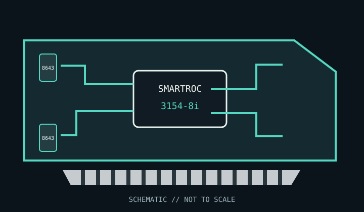

[ INDIVIDUAL COMPONENT // STORAGE / DISK I/O ]
Microchip Adaptec SmartRAID 3154-8i
Eight internal SAS/SATA lanes with hardware RAID and protected write cache, for direct-attached or expander-backed storage.

MODEL SCOPE: SmartRAID 3154-8i. Confirm the full Microchip part number, board revision, included cache-protection module, bracket and firmware before installation.
Reference specifications
| Model / controller | Adaptec SmartRAID 3154-8i; SmartROC 3100-series RAID-on-Chip controller. |
|---|---|
| Host bus | PCI Express 3.0 x8; verify that the slot is electrically wired for the required lanes. |
| Ports | Eight internal SAS/SATA lanes through two SFF-8643 Mini-SAS HD connectors. |
| Protocols | SAS up to 12 Gb/s and SATA up to 6 Gb/s; use supported SAS expanders for larger enclosures. |
| RAID / HBA mode | Hardware RAID 0, 1, 5, 6, 10, 50 and 60; mixed RAID and raw-device presentation is supported by the SmartRAID firmware family. |
| Cache / protection | 4 GB DDR4 cache; flash-backed cache protection is supported. Verify whether the exact board package includes its ASCM35F cache-protection module. |
| Firmware / OS | Use Microchip firmware, maxView and the driver matching the exact controller and OS release. Validate supported Windows, Linux and hypervisor versions in the SmartRAID 3100 documentation. |
| Drive / backplane caveats | Confirm SFF-8643 cable pinout, SAS/SATA backplane support, drive sector format and expander compatibility. Do not attach SATA devices through a SAS-only path unless the backplane explicitly supports SATA. |
Compatibility and service notes
- Keep the controller firmware, maxView version and operating-system driver within Microchip's supported combination.
- Record array metadata and retain a verified backup before a firmware update, migration or controller replacement.
- Cache protection depends on the proper module and service state; use write-through operation if protection is unavailable.
Sources & further reading
- Microchip — SmartRAID 3154-8i product and documentation pageManufacturer model page with specifications, support downloads, firmware and documentation.
- Microchip — SmartHBA / SmartRAID Installation and User GuideOfficial installation, configuration, firmware and operating-system guidance.
- Microchip — Adaptec SmartRAID 3100 Series sell sheetManufacturer overview for the SmartRAID 3100 adapter family.